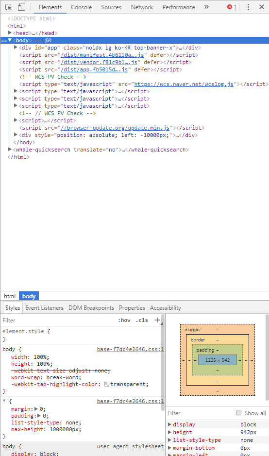

직접 패치 추가하기
내가 자주 사용하는 사이트인데 전혀 접속이 안 되거나
접속은 되는데 일부 화면이 로딩되는데 한참 걸린 적 있나요?
ToonRaon 싸지방 접속기는 다른 접속기들과는 달리 직접 패치를 추가할 수 있는 기능이 존재합니다.
대부분의 사이트는 제가 직접 패치를 해놓았지만
모든 국군 장병 여러분들이 쓰는 사이트들을 모두 패치할 순 없기 때문에
일부 누락된 사이트들이 있을 수 있습니다.
이럴 때 여러분들이 직접 패치를 추가하여
사이트 접속이 가능하게 하는 방법을 소개해드리겠습니다.
아예 접속 자체가 안 되는 사이트인 경우
영국 구글을 예로 들어 봅시다.
사이트 주소는 google.co.uk 입니다.
지금 바로 주소창에 google.co.uk를 입력해보세요.

아마 접속이 안 될 거예요.
왜냐하면 기본적으로 저희 접속기에는 google.com 그리고 google.co.kr만
등록이 되어 있기 때문에
google.co.uk는 패치가 안 되어 있는 상태입니다.
접속기를 실행시킨 후 [ 0. 고급 ] - [ 1. 구글 사이트 패치 추가하기 ]로 들어가세요.
싸지방에서 접속이 안 되는 수많은 구글 관련 사이트들을
모두 뚫을 수 있는 기능입니다.
위와 같은 창이 나옵니다.
여기서 google.co.uk를 입력합니다.
이렇게 입력한 후 Enter를 치면 됩니다.
간혹 Enter를 치자마자 접속기가 꺼져버릴 수 있는데 괜찮습니다.
다시 접속기를 실행한 후 똑같이 해주세요.
자 이제 패치가 되었습니다.
google.co.uk로 다시 들어가보세요.
접속이 잘 되는 모습을 볼 수 있습니다.
접속은 되는데 일부 화면 로딩이 느린 경우
네이버 클라우드 플랫폼 홈페이지를 예로 들어볼게요.
www.ncloud.com으로 접속해봅시다.
분명 홈페이지를 불러와졌는데
어딘가 로딩이 덜 된 모습을 보입니다.
로그인 같은 걸 클릭해봐도 제대로 동작하질 않아요.
실제로 제대로 로딩이 되려면 이런 창이 나타나야합니다.
조금 다르죠?
물론 한참을 기다리면 이렇게 정상적으로 로딩이 됩니다.
그런데 접속할 때마다 기다리기는 힘들죠.
※ 네이버 웨일이나 구글 크롬만 됩니다.
F12를 눌러서 개발자 도구를 켜세요.

이런 창이 뜰 겁니다.
Network 탭을 클릭하세요.
Network 화면으로 진입했습니다.
F5를 눌러서 페이지 새로고침을 합시다.
그리고 페이지가 완전히 로딩될 때까지 기다립니다.
페이지 로딩이 완료되면
Network를 보세요.
다른 애들은 전부 몇 ms(밀리세컨드)만에 로딩이 되었는데
혼자 41.19초나 걸린 애가 있습니다.
얘가 원인입니다.

마우스를 올려보면 해당 파일의 주소가
browser-update.org란 걸 알 수 있습니다.
(슬래시(/)뒤에 있는 것들(update.min.js)는 무시하면 됩니다.)
특이하네요.
보통은 패치가 미처 되지 않은 구글 관련 사이트인 경우가 많은데
전혀 엉뚱한 사이트랑 연결되어 있었습니다.
구글 관련 사이트인 경우 위에서 알려드린
[ 0. 고급 ] - [ 1. 구글 사이트 패치 추가하기 ]를 이용하면 되는데
이건 좀 다릅니다.
어차피 쓸모없는 파일이기 때문에
아예 접속 자체를 차단하도록 합시다.
접속기를 실행하고
[ 0. 고급 ] - [ 3. 새로운 IP와 URL 등록하기 ]에 들어갑니다.
위와 같이 127.0.0.1 browser-update.org를 입력합니다.
이렇게 127.0.0.1 "사이트 이름"을 입력하면 아예 해당 사이트로 접속을 막아버릴 수 있습니다.
이제 다시 www.ncloud.com에 접속하면 문제없이 빠르게 접속됩니다.